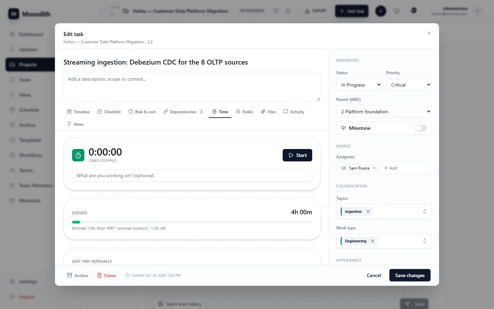
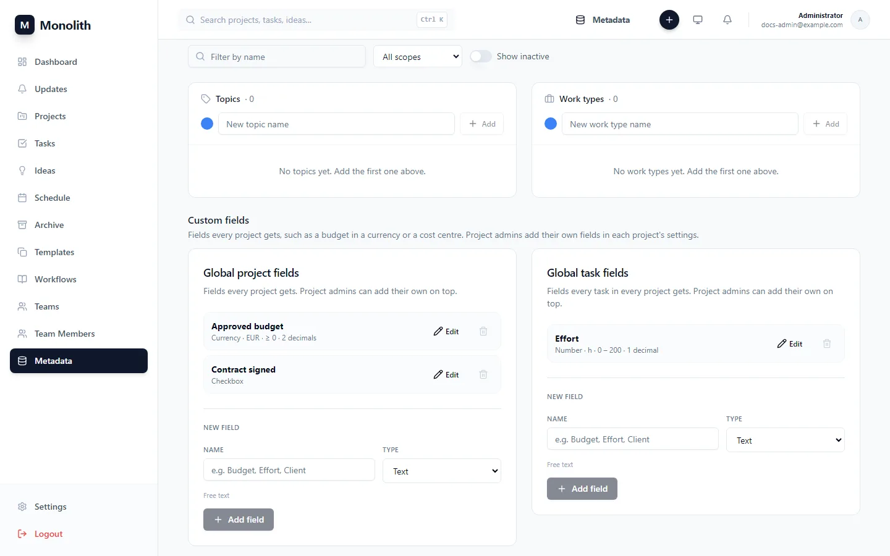
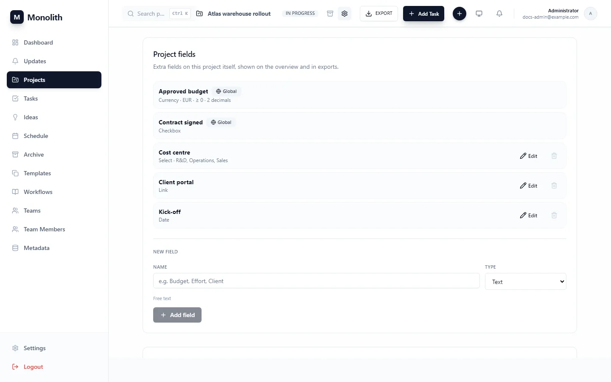
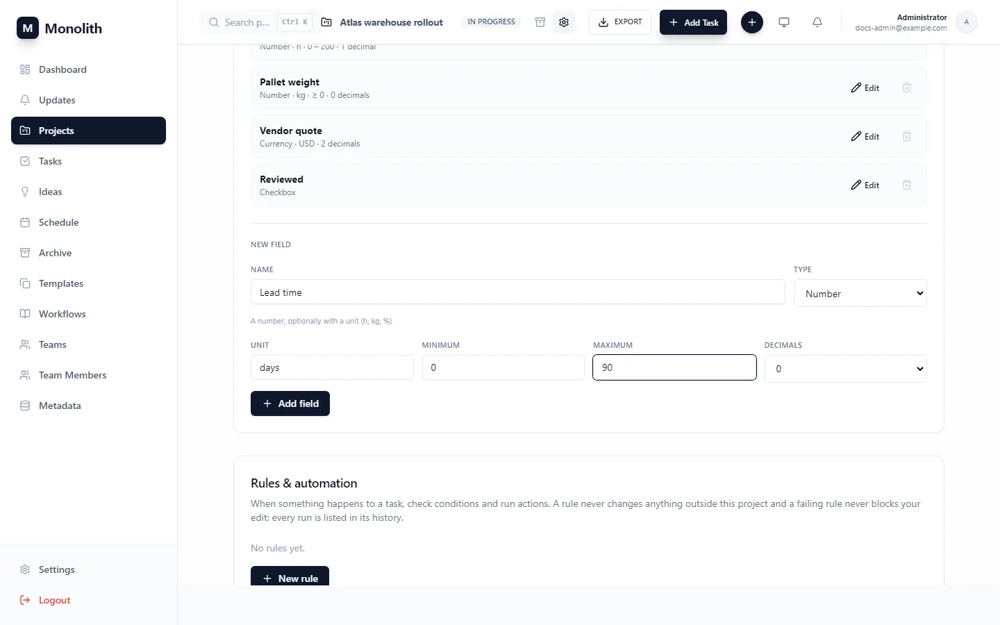
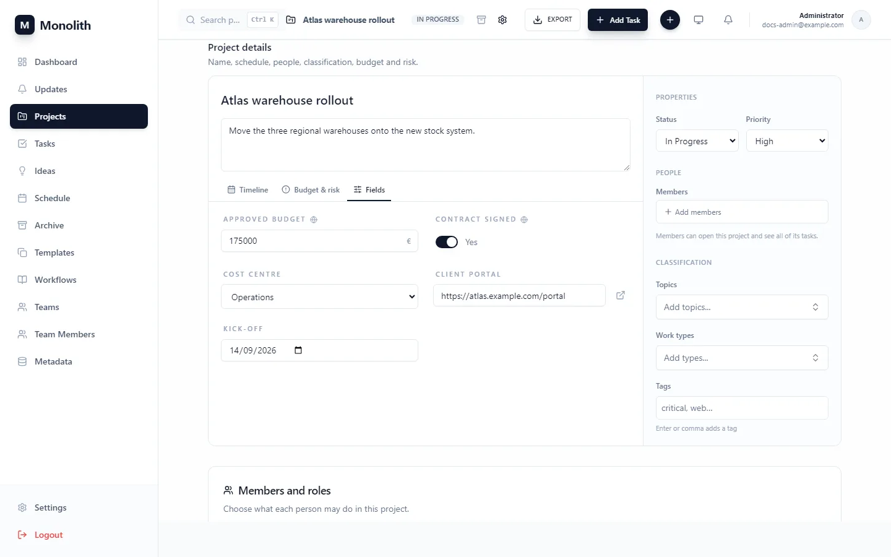
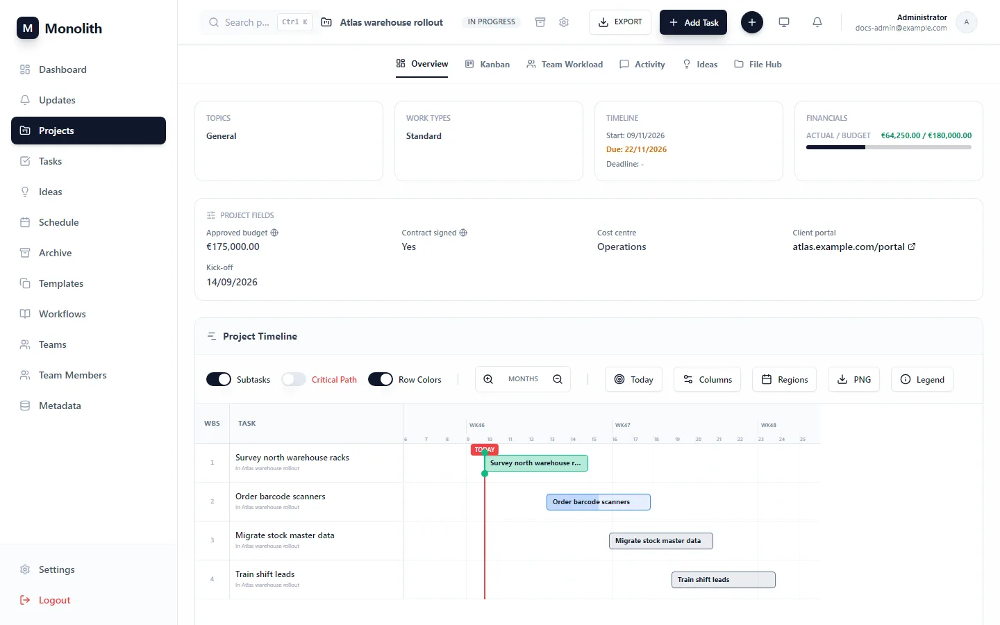
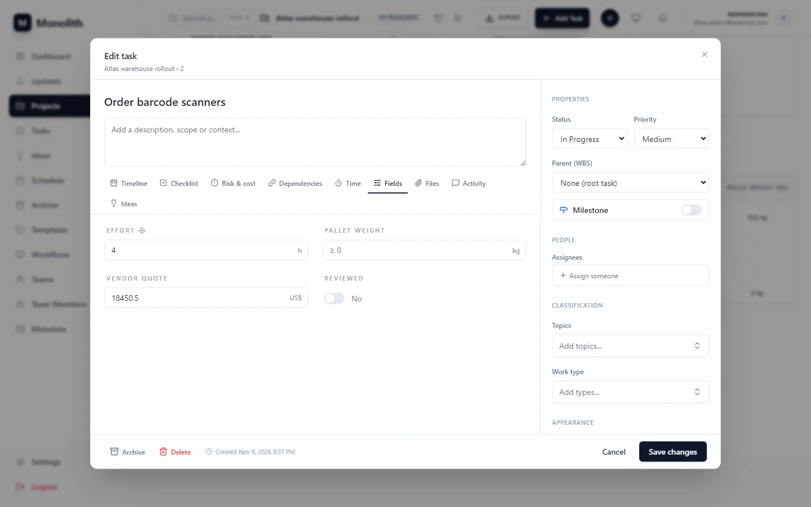
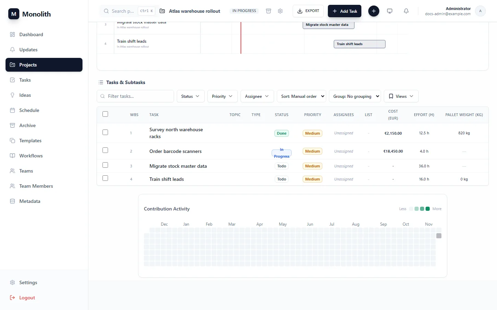

Tracking
Measuring the work as it happens: time against estimates, the project-specific data you need on every task, work that repeats, and your tasks in the calendar you already use.
Time tracking
- Timer: Start on a task's Time tab. One timer per person runs at a time (enforced by the database); starting another stops nothing silently: you get a conflict and stop the first.
- Manual entries: add a block with start, end and a note; never in the future. Authors (and administrators) edit and delete their entries.
- Estimate versus actual: each task shows logged hours against its PERT expected duration (falling back to
duration_days) at 8 working hours per day, with the variance and percent of estimate. - Timesheet: hours per person and project over a date range (both dates inclusive, by entry start). With a project, members see everyone's time; without one you see your own (administrators anyone).
Any user who can read a task may log their own time on it, so an assigned viewer can record hours without editing the task. Timestamps are stored as naive UTC.
API: /api/v1/time. MCP: start_timer, stop_timer, log_time, get_task_time, get_timesheet.

Custom fields
Projects and tasks come with a fixed set of fields: dates, status, priority, budget and actual cost, risk and so on. Custom fields add your own on top, such as an approved budget in euros, the effort in hours, a cost centre, a link to the client portal or a "contract signed" tick. Each field has a type that decides what can be entered, and number fields can carry a unit, limits and a number of decimals.
Where a field lives
Two choices define every field:
| Global field | Project field | |
|---|---|---|
| Who defines it | Superusers, in Metadata › Custom fields | Project admins, in Project Settings |
| Where it appears | In every project, read-only in project settings and marked with a globe | In that project only |
| Typical use | Things every project reports the same way: approved budget, cost centre, contract signed | What only this project tracks: pallet weight, vendor quote, reviewed |
Independently, a field applies to projects (one value per project, shown on the overview) or to tasks (one value per task, edited on the task's Fields tab). Neither the type nor what a field applies to can change once it exists. Delete the field and create a new one instead.


Types, units and limits
| Type | Value | Settings | Shown as |
|---|---|---|---|
text | free text, up to 5,000 characters | Client reference PO-4410 | |
number | a number | unit (free text: h, kg, %, days), minimum, maximum, decimals | 12.5 h, 820 kg, 40% |
currency | an amount | currency (ISO code, empty = the instance currency), minimum, maximum, decimals | €175,000.00, US$18,450.50 |
select | one of the field's options | options | Cost centre Operations |
date | a calendar date | Kick-off 14/09/2026 | |
user | a person with an account | Reviewer Sam Rivera | |
checkbox | yes or no | Contract signed Yes | |
url | an http(s) link | a clickable link |
- Unit is only a label, so
handhoursare different units to Monolith. Pick one per field and keep it. - Minimum and maximum are inclusive. Either can be left empty:
≥ 0means "no negative values". - Decimals rounds what is entered (
12.346with 2 decimals is stored as12.35). The limits are checked after rounding. Left empty, numbers keep what was typed and money follows its currency (2 decimals for EUR, 0 for JPY). - Number inputs accept a decimal comma or point (
1234,5or1234.5).

Worked example: a budget in euros
As a superuser, open Metadata and, in Global project fields, add Approved budget of type Currency. Leave the currency on Default (EUR), set the minimum to
0and decimals to2.Every project now has the field. A project admin opens Project Settings › Project details › Fields, types
175000and saves.The overview shows €175,000.00 under Project fields. The projects list and the project exports get an
Approved budget (EUR)column.


Task values
Task fields, global and the project's own, are edited on the task's Fields tab by anyone who can edit the task. Number inputs show the unit or currency symbol and the allowed range. Tasks outside any project get the global task fields only. The project's task list shows the first three task fields as columns, in field order. All of them are in the project's detailed export.


Changing and deleting fields
- Renaming is safe: values are stored by field id, not by name. Names are unique (ignoring case) among everything a project sees, so a project cannot add a field with the same name as a global one.
- Removing a select option clears it wherever it was used. Tightening the limits clears values now outside them. Loosening them, or changing unit, currency or decimals, keeps every value.
- Deleting a field removes its values from every project or task that had one. For a global field that means every project.
- Changes to task values show up in the task's change log as "updated N custom fields".
Deleting a global field cannot be undone and reaches every project. Export first if you need the values.
Fixed budget and the instance currency
The built-in budget and actual cost of projects and tasks stay as they are: they feed the financials card, the risk and cost panel, statistics and exports. They are shown in the instance currency, set with CURRENCY (default EUR, see configuration). The same currency is used by currency fields that do not name their own. Use a custom field when you need a second amount (an approved budget next to the planned one) or an amount in another currency.
API and MCP
Values travel in custom_values on projects and tasks: a JSON object keyed by field id. null clears a value, and omitting custom_values on update leaves them untouched. Every save is validated: an unknown field, a wrong type or a value outside the limits is a 400.
# the fields a project sees (global first); applies_to = project | task GET /api/v1/projects/{id}/custom-fields?applies_to=task POST /api/v1/projects/{id}/custom-fields {"name": "Effort", "field_type": "number", "applies_to": "task", "unit": "h", "min_value": 0, "decimals": 1} # global fields (writes: superusers only) GET /api/v1/custom-fields POST /api/v1/custom-fields {"name": "Approved budget", "field_type": "currency", "applies_to": "project", "min_value": 0, "decimals": 2} # values PUT /api/v1/projects/{id} {"custom_values": {"<field id>": 175000}} PUT /api/v1/tasks/{id} {"custom_values": {"<field id>": 12.5, "<other id>": true}}
API: /api/v1/custom-fields. MCP: list_custom_fields, create_custom_field, update_custom_field, delete_custom_field and their …_global_custom_field counterparts; update_project and update_task take custom_values.
Recurring tasks
Set Repeat in the task editor: daily, weekly, monthly or yearly, with an interval, weekdays, a day of month or “last Friday”, and an optional end date. When the task is marked Done, Monolith creates the next copy:
- Dates move by the distance to the next occurrence, keeping start, due and deadline spacing.
- The copy starts as Todo with the checklist reset; assignees, topics, types, tags, estimates and custom values carry over. Subtasks are not copied.
- Finishing late never creates overdue copies: the next occurrence is after both the task's date and the completion time.
- Past the end date the series stops; clearing the rule on the open copy ends it. Re-saving a Done task creates nothing.
Rules are a subset of RFC 5545 stored in recurrence_rule: FREQ (required), INTERVAL (1–365), BYDAY, BYMONTHDAY (1–31 or −1) and UNTIL. Anything else is a 422.
FREQ=WEEKLY;INTERVAL=2;BYDAY=MO,WE # every other Monday and Wednesday FREQ=MONTHLY;BYMONTHDAY=-1 # last day of each month FREQ=MONTHLY;BYDAY=1MO;UNTIL=20271231 # first Monday, until end of 2027
As in the RFC, “monthly on day 31” skips months without a 31st. Use the last-day option to always hit month end.
Calendar feed
- Settings › Calendar feed › Create link.
- Copy the link into Google Calendar, Outlook or Apple Calendar (“add calendar from URL”).
The feed lists tasks assigned to you (and your own tasks outside projects) that have a start or due date, as all-day events linking back to the task. Done tasks are hidden unless the URL ends with ?include_done=true. Calendar apps refresh on their own schedule, often hourly or slower.
The link is the credential (a 256-bit random token), because calendar apps cannot sign in. Anyone with it sees those task titles. New link replaces it at once; Revoke removes it. Wrong tokens are throttled (30 per hour per client).